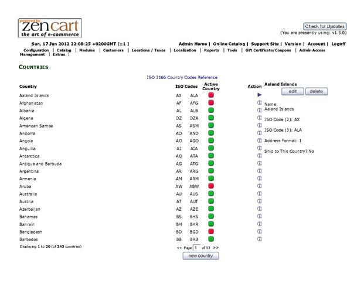
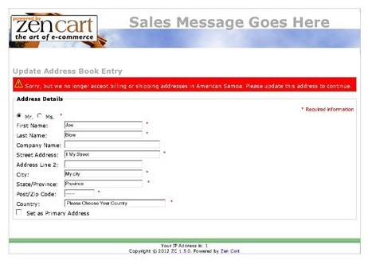

Current Support Thread at Zen Cart Forums: http://www.zen-cart.com/showthread.php?197534-Selectable-Countries-Support-Thread
Note: This plugin supports Zen Cart v1.5.0 and v1.5.1 only. The behavior provided by this plugin is built into Zen Cart versions 1.5.2 and later. If you have installed this plugin and are preparing to upgrade to Zen Cart v1.5.2 and later, refer here for instructions.
You've got a store and you only want to ship to four countries … today. This plugin allows you to enable or disable individual countries in your database so that if you decide tomorrow that you now want to ship to seven countries, it's a simple matter of clicking a couple of buttons in your admin area to enable the next three.
The updated display of your admin's Location/Taxes->Countries looks like the image below. Countries that are Active show a green-dot and those that are Inactive show a red-dot. You can change a country's Active status by either clicking on the dot to toggle between active and inactive or via checkbox input if you choose to Edit that country's settings.
When a country is Inactive, that country cannot be used in any customer address — neither the billing nor shipping address can reside in that country. If an existing customer has an address-book entry in a country that is now inactive, that customer will be redirected to the address_book_process page upon login. From that page, they can either change the no-longer-supported address to have an active country, delete the no-longer-supported address or logoff. The screen-shot below shows how this is presented to the customer:
If your store uses PayPal® Express Checkout, it is possible that the customer's account with PayPal is in a country that is inactive in your store. You might be able to configure your PayPal account to limit the countries from which you accept payments and/or ship to.
There are core-file overwrites in this plugin; you should always backup your cart’s database and files prior to making any changes.
Run the uninstall_selectable_countries.sql to remove the database entries, then replace the files you previously copied with their initial contents.
The function provided by Selectable Countries is included in Zen Cart v1.5.2 and later. If you have installed Selectable Countries on your Zen Cart v1.5.0 or v1.5.1 store and are preparing to upgrade, this section identifies that process. The following table identifies what action to perform on each of this plugin's files during your upgrade:
| File Name | Upgrade Action |
|---|---|
| /includes/auto_loaders/config.country_check.php | Delete |
| /includes/init_includes/init_country_check.php | Delete |
| /includes/functions/functions_lookups.php | Use Zen Cart distribution version |
| /includes/functions/extra_functions/selectable_countries_functions.php | Delete |
| /includes/languages/english/extra_definitions/YOUR_TEMPLATE/selectable_countries.php | Delete |
| /YOUR_ADMIN/countries.php | Use Zen Cart distribution version |
| /YOUR_ADMIN/includes/languages/english/countries.php | Use Zen Cart distribution version |
Once the file-related portion of your upgrade is completed, run the SQL patch present in /sc_upgrade_to_zc152.sql. This file changes the name of the countries_active field to its Zen Cart v1.5.2+ field name (status).